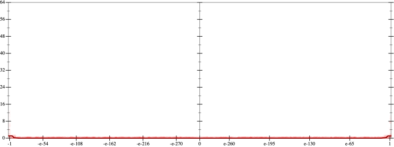
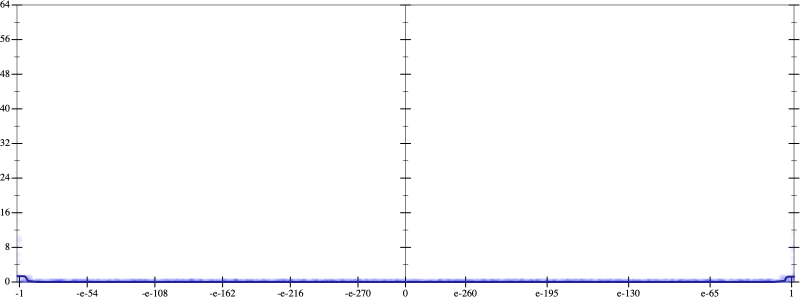
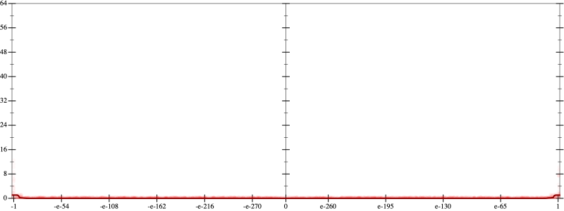
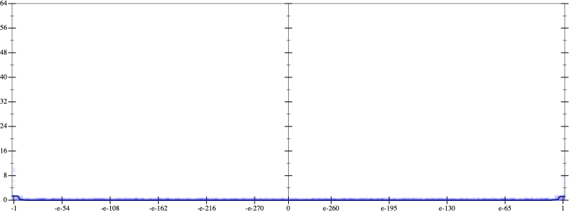

Initial program 0.0
\[\left(\left(\left(\left(\left(\left(-518918400.0 \cdot x + 2421619200.0 \cdot \left(\left(x \cdot x\right) \cdot x\right)\right) + -2905943040.0 \cdot \left(\left(\left(\left(x \cdot x\right) \cdot x\right) \cdot x\right) \cdot x\right)\right) + 1383782400.0 \cdot \left(\left(\left(\left(\left(\left(x \cdot x\right) \cdot x\right) \cdot x\right) \cdot x\right) \cdot x\right) \cdot x\right)\right) + -307507200.0 \cdot \left(\left(\left(\left(\left(\left(\left(\left(x \cdot x\right) \cdot x\right) \cdot x\right) \cdot x\right) \cdot x\right) \cdot x\right) \cdot x\right) \cdot x\right)\right) + 33546240.0 \cdot \left(\left(\left(\left(\left(\left(\left(\left(\left(\left(x \cdot x\right) \cdot x\right) \cdot x\right) \cdot x\right) \cdot x\right) \cdot x\right) \cdot x\right) \cdot x\right) \cdot x\right) \cdot x\right)\right) + -1720320.0 \cdot \left(\left(\left(\left(\left(\left(\left(\left(\left(\left(\left(\left(x \cdot x\right) \cdot x\right) \cdot x\right) \cdot x\right) \cdot x\right) \cdot x\right) \cdot x\right) \cdot x\right) \cdot x\right) \cdot x\right) \cdot x\right) \cdot x\right)\right) + 32768.0 \cdot \left(\left(\left(\left(\left(\left(\left(\left(\left(\left(\left(\left(\left(\left(x \cdot x\right) \cdot x\right) \cdot x\right) \cdot x\right) \cdot x\right) \cdot x\right) \cdot x\right) \cdot x\right) \cdot x\right) \cdot x\right) \cdot x\right) \cdot x\right) \cdot x\right) \cdot x\right)\]
Taylor expanded around 0 0.0
\[\leadsto \left(\left(\left(\left(\left(\left(-518918400.0 \cdot x + \color{blue}{2421619200.0 \cdot {x}^{3}}\right) + -2905943040.0 \cdot \left(\left(\left(\left(x \cdot x\right) \cdot x\right) \cdot x\right) \cdot x\right)\right) + 1383782400.0 \cdot \left(\left(\left(\left(\left(\left(x \cdot x\right) \cdot x\right) \cdot x\right) \cdot x\right) \cdot x\right) \cdot x\right)\right) + -307507200.0 \cdot \left(\left(\left(\left(\left(\left(\left(\left(x \cdot x\right) \cdot x\right) \cdot x\right) \cdot x\right) \cdot x\right) \cdot x\right) \cdot x\right) \cdot x\right)\right) + 33546240.0 \cdot \left(\left(\left(\left(\left(\left(\left(\left(\left(\left(x \cdot x\right) \cdot x\right) \cdot x\right) \cdot x\right) \cdot x\right) \cdot x\right) \cdot x\right) \cdot x\right) \cdot x\right) \cdot x\right)\right) + -1720320.0 \cdot \left(\left(\left(\left(\left(\left(\left(\left(\left(\left(\left(\left(x \cdot x\right) \cdot x\right) \cdot x\right) \cdot x\right) \cdot x\right) \cdot x\right) \cdot x\right) \cdot x\right) \cdot x\right) \cdot x\right) \cdot x\right) \cdot x\right)\right) + 32768.0 \cdot \left(\left(\left(\left(\left(\left(\left(\left(\left(\left(\left(\left(\left(\left(x \cdot x\right) \cdot x\right) \cdot x\right) \cdot x\right) \cdot x\right) \cdot x\right) \cdot x\right) \cdot x\right) \cdot x\right) \cdot x\right) \cdot x\right) \cdot x\right) \cdot x\right) \cdot x\right)\]
Applied simplify0.0
\[\leadsto \color{blue}{\left(\left(\left(x \cdot x\right) \cdot \left(x \cdot x\right)\right) \cdot \left({x}^{3} \cdot \left({x}^{3} \cdot {x}^{3}\right)\right)\right) \cdot \left(\left(x \cdot x\right) \cdot 32768.0 + -1720320.0\right) + \left(\left(\left({x}^{3} \cdot \left({x}^{3} \cdot {x}^{3}\right)\right) \cdot \left(33546240.0 \cdot \left(x \cdot x\right) + -307507200.0\right) + \left(x \cdot x\right) \cdot \left(2421619200.0 \cdot x\right)\right) + \left(\left(-518918400.0 \cdot x + \left(x \cdot -2905943040.0\right) \cdot \left(\left(x \cdot x\right) \cdot \left(x \cdot x\right)\right)\right) + \left(\left(x \cdot 1383782400.0\right) \cdot \left(x \cdot x\right)\right) \cdot \left(\left(x \cdot x\right) \cdot \left(x \cdot x\right)\right)\right)\right)}\]
- Using strategy
rm Applied add-exp-log0.0
\[\leadsto \left(\left(\left(x \cdot x\right) \cdot \left(x \cdot x\right)\right) \cdot \left({x}^{3} \cdot \left({x}^{3} \cdot {x}^{3}\right)\right)\right) \cdot \left(\left(x \cdot x\right) \cdot 32768.0 + -1720320.0\right) + \left(\left(\left({x}^{3} \cdot \left({x}^{3} \cdot {x}^{3}\right)\right) \cdot \left(\color{blue}{e^{\log \left(33546240.0 \cdot \left(x \cdot x\right)\right)}} + -307507200.0\right) + \left(x \cdot x\right) \cdot \left(2421619200.0 \cdot x\right)\right) + \left(\left(-518918400.0 \cdot x + \left(x \cdot -2905943040.0\right) \cdot \left(\left(x \cdot x\right) \cdot \left(x \cdot x\right)\right)\right) + \left(\left(x \cdot 1383782400.0\right) \cdot \left(x \cdot x\right)\right) \cdot \left(\left(x \cdot x\right) \cdot \left(x \cdot x\right)\right)\right)\right)\]
 
